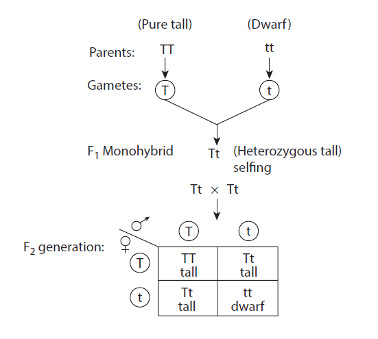

Result:
Phenotypic ratio = Tall - 3 : Dwarf - 1
Genotypic ratio = Pure Tall - 1 : Hybrid Tall - 2 : Pure Dwarf – 1
Aim:
To observe transverse section (T.S) of Dicot Stem or Dicot Root from permanent slides.
Observation:
A. The given slide is identified as T.S of Dicot Stem